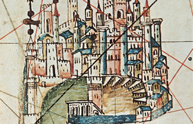

Lezione 9  Prima globalizzazione Europea
Prima globalizzazione Europea

Il risveglio delle città tra l’XI e il XIII secolo fu favorito dall’incremento delle attività economiche. In Italia le città marinare di Amalfi, Pisa, Genova e Venezia furono fondamentali per la ripresa della circolazione di merci in Europa. Aprirono rotte marittime che per secoli non erano state percorse, crearono legami stabili tra una sponda e l’altra del Mediterraneo, quella cristiana e quella musulmana, si spinsero in luoghi lontani, nel Mar Nero e oltre lo stretto di Gibilterra nell’Atlantico. Trasportando merci, acquistandole in un luogo e rivendendole in un altro, scambiando stoffe, spezie, metalli, legnami, sale e schiavi, le città italiane si arricchirono. Dai porti dove venivano scaricate, le merci erano caricate su carri, asini, barche e trasportate lungo le strade e i fiumi fino a raggiungere le città. Le Repubbliche marinare incrementarono gli scambi commerciali via mare e via terra, crearono collegamenti tra le aree commerciali del Mediterraneo, del Mare del Nord, del Mar Baltico, dell’Atlantico occidentale e del Mar Nero. Amalfi fu la prima città a crescere grazie ai commerci: ebbe il suo massimo sviluppo intorno al 1100, poi venne sconfitta da Pisa, che combatté contro la pirateria saracena, occupò le isole della Corsica e della Sardegna. Nel 1150 Pisa era la più importante potenza navale del Mediterraneo. Genova stabilì rotte commerciali molto lunghe, che raggiungevano il Mar Nero, mentre Venezia, nata sulle isole della laguna veneta, concentrò i suoi traffici specialmente verso Oriente. Divenne una potenza commerciale di grande importanza. Nel nord Europa, nel corso del XIII e del XIV secolo, ebbe un ruolo importante - per le attività commerciali - la Lega Anseatica, una libera associazione di centri portuali tedeschi, fiamminghi e scandinavi che si affacciavano sui mari del nord.